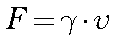
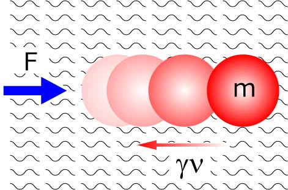

粘性力とは難しい定義はおいておくと，
物体を静止させようとする力
です（もちろん正確な表現ではありませんが）．
この力は，その物体の速度に比例します，つまり，

となります．

ここでの比例定数，γ，のことを，粘性抵抗係数，と呼びます．
この値は物体の大きさ，形状に依存します．
ですので，車や飛行機などはいかにこの値を小さくするかで苦労しているわけです．
さて，この粘性力，速度とともに大きくなっていきますね．
先の，慣性力，自由落下など，一定の力が常時働く場合には，一定の加速度となり，速度がどんどん上がっていくと説明しました．
となると，粘性抵抗もどんどん上がっていく．
となると最終的には重力と粘性力が釣り合って，それ以上速くも遅くもならない状態となります．
つまり，自由落下の場合，粘性力がある場合にはある一定の速度で落ち着くこととなります．
ここで，半径ｒの球の場合の粘性抵抗係数は

となります．